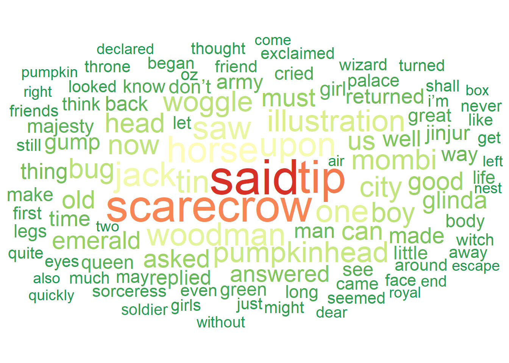
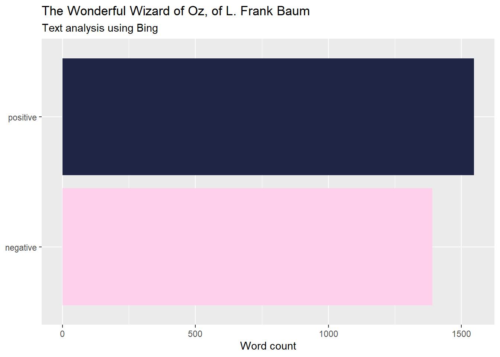
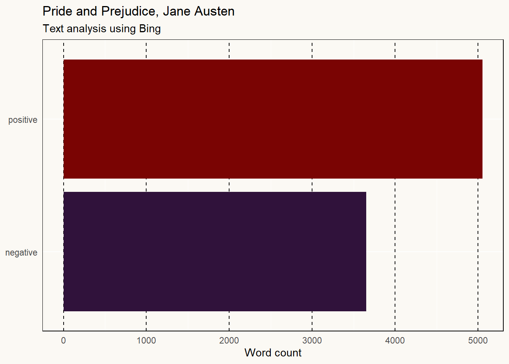
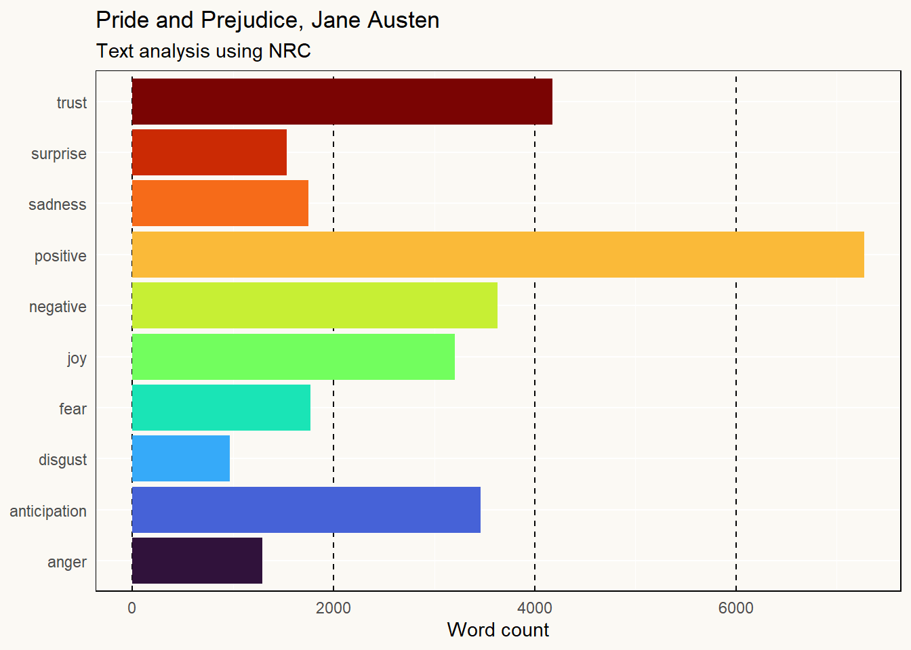
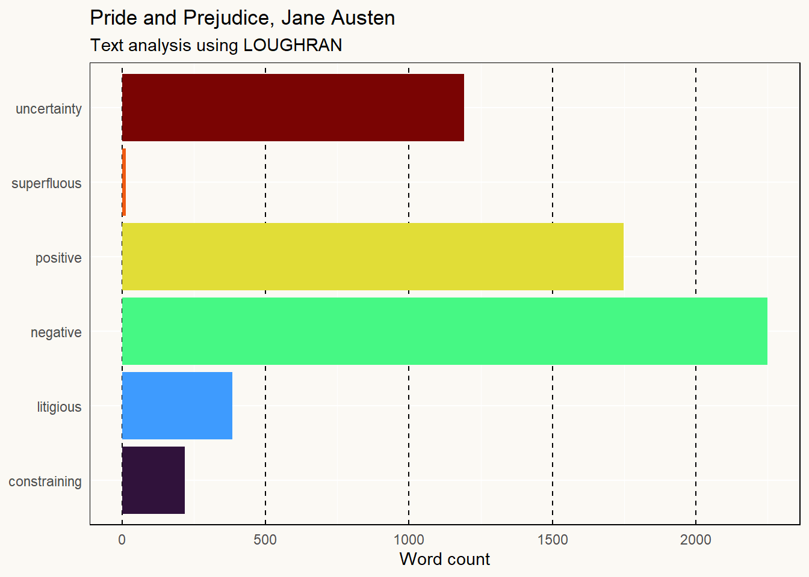
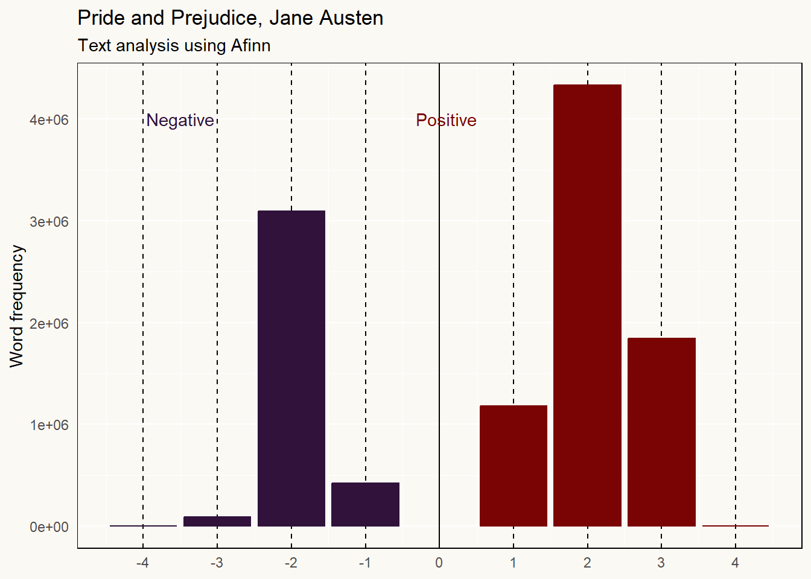

Show the code
# Charging dependencies
library(gutenbergr)
library(tidyverse)
library(tidytext)
library(stopwords)
library(hunspell)
library(SnowballC)
library(ggpattern)
library(ggwordcloud)
library(RColorBrewer)
library(textdata)Let’s first load the packages necessary for the analysis.
# Charging dependencies
library(gutenbergr)
library(tidyverse)
library(tidytext)
library(stopwords)
library(hunspell)
library(SnowballC)
library(ggpattern)
library(ggwordcloud)
library(RColorBrewer)
library(textdata)wizard_of_oz <- gutenberg_download(54) |> select(text)
oz_df <- wizard_of_oz |>
stringr::str_squish() |>
tibble::as_tibble() |>
tidytext::unnest_tokens(input = "value",
output = "word",
token = "words",
to_lower=TRUE) |>
dplyr::anti_join(stopwords::stopwords(language = "en") |>
as_tibble(),
by=c("word"="value")) |>
dplyr::mutate(stem = SnowballC::wordStem(word)) bar_graph <- oz_df |>
dplyr::group_by(word) |>
dplyr::mutate(word_count = n()) |>
dplyr::ungroup() |>
dplyr::arrange(desc(word_count)) |>
dplyr::distinct(word, .keep_all = TRUE) |>
dplyr::slice_max(order_by = word_count, n=30) |>
ggplot(aes(x=word |> reorder(word_count),y=word_count, fill=word_count))+
ggpattern::geom_col_pattern(
aes(pattern_fill = word_count),
pattern = 'none',
fill="seagreen4",
show.legend = FALSE)+
geom_label(aes(label=word_count), size = 3, color="white",hjust=-0.5)+
coord_flip()+
ylim(c(0,2500))+
labs(x=NULL,y=NULL,
title="Words in The Jungle Book",
subtitle = "30 most frequent words.")
bar_graphWarning: The `scale_name` argument of `continuous_scale()` is deprecated as of ggplot2
3.5.0.
Let’s turn it into a wordcloud.
wordcloud <- oz_df |>
dplyr::group_by(word) |>
dplyr::summarise(word_count = n()) |>
dplyr::distinct(word, .keep_all = TRUE) |>
dplyr::slice_max(order_by=word_count, n = 100) |>
ggplot()+
ggwordcloud::geom_text_wordcloud(aes(label = word, size = word_count, color=word_count)) +
scale_size_area(max_size = 17) +
scale_color_distiller(palette="RdYlGn", direction=-1)+
theme_minimal()
wordcloud
The dataset bing from tidytext classifies the words envious, enviousness and enviously twice: once as positive, once as negative… Error ?
sentiment1 <- oz_df |>
select(-stem) |>
dplyr::left_join(get_sentiments("bing"),
by=c("word")) |>
dplyr::filter(!is.na(sentiment)) |>
dplyr::group_by(sentiment) |>
dplyr::summarise(sentiment_count = n()) |>
# Plot
ggplot(aes(x=sentiment,y=sentiment_count,fill=sentiment))+
geom_col(show.legend = FALSE)+
coord_flip()+
labs(x=NULL,y="Word count",
title = "The Wonderful Wizard of Oz, of L. Frank Baum",
subtitle = "Text analysis using Bing")+
scale_fill_manual(values = c("#FFD0EC","#1F2544"))
sentiment1
nrc <- tidytext::get_sentiments("nrc")
sentiment2 <- oz_df |>
dplyr::left_join(nrc,
by=c("word"="word"), multiple="all") |>
dplyr::filter(!is.na(sentiment)) |>
dplyr::group_by(sentiment) |>
dplyr::summarize(sentiment_count = n()) |>
# Plot
ggplot(aes(x=reorder(sentiment, sentiment_count), y=sentiment_count,fill=sentiment))+
geom_col()+
coord_flip()+
labs(x=NULL,y="Word count",
title = "Infinite Jest by David Foster Wallace",
subtitle = "Text analysis using NRC lexicon")+
theme(legend.position = "none")+
scale_fill_manual(values=c(
"positive"="forestgreen",
"negative"="orangered",
"trust"="royalblue",
"anticipation"="gold",
"fear"="red",
"sadness"="purple",
"joy"="green",
"anger"="black",
"disgust"="brown",
"surprise"="cyan")
)Why can’t I use tidytext::get_sentiment("nrc") inside the left_join ?
Let’s begin by loading the data which is available in a R package (lucky me).
library("janeaustenr")
library("viridis")
pride <- janeaustenr::prideprejudiceThen we clean the data by tokenizing it and removing stop words.
pride_df <- pride |>
stringr::str_squish() |>
tibble::as_tibble() |>
tidytext::unnest_tokens(input = "value",
output = "text",
token = "words",
to_lower = TRUE) |>
anti_join(stopwords::stopwords(language = "en") |>
as_tibble(), by=c("text"="value"))We then make a nice use of a loop to get every different type of sentiment analysis available from the tidytext::get_sentiment() function.
for (i in c("bing", "loughran", "nrc")){
pride_df |>
left_join(tidytext::get_sentiments(i), by=c("text"="word"), multiple="all") %>%
filter(!is.na(sentiment)) |>
group_by(sentiment) |>
summarize(sentiment_count = n()) %>%
{assign(paste0("sentiment_", i), ., envir = .GlobalEnv)}
}This is a nice example of one way that the two pipes differ. Using the base R pipe ( |> ) doesn’t allow for the use of brackets ( {} ), whereas magrittr’s pipe does ( %>% ).
AFINN is a bit different, variables names are different too, so we do not include it into the loop.
sentiment_afinn <- pride_df |>
left_join(tidytext::get_sentiments("afinn"), by=c("text"="word"), multiple="all") %>%
filter(!is.na(value)) |>
group_by(value) |>
dplyr::mutate(n = n(),
p = n/sum(n),
c = case_when(value<0 ~ "Negative",
value==0 ~ "Neutral",
value>0 ~ "Positive") |>
factor())Let’s make our own theme so that the graph are easier to customize.
theme_axel <- function () {
theme(
axis.line = element_blank(),
axis.ticks = element_blank(),
panel.grid.major.x = element_line(colour="black", linetype = "dashed"),
panel.background = element_rect(fill = "#fbf9f4", color = "#fbf9f4"),
panel.border = element_rect(linetype = 1, fill=NA),
plot.background = element_rect(fill = "#fbf9f4", color = "#fbf9f4")
)
}plot_bing <- sentiment_bing %>%
ggplot(aes(x=sentiment,y=sentiment_count,fill=sentiment))+
geom_col(show.legend = FALSE)+
coord_flip()+
labs(x=NULL,y="Word count",
title = "Pride and Prejudice, Jane Austen",
subtitle = "Text analysis using Bing")+
scale_fill_viridis(discrete = TRUE, option="turbo") +
theme_axel()
plot_bing
plot_nrc <- sentiment_nrc %>%
ggplot(aes(x=sentiment,y=sentiment_count,fill=sentiment))+
geom_col(show.legend = FALSE)+
coord_flip()+
labs(x=NULL,y="Word count",
title = "Pride and Prejudice, Jane Austen",
subtitle = "Text analysis using NRC")+
scale_fill_viridis(discrete = TRUE, option="turbo") +
theme_axel()
plot_nrc
plot_loughran <- sentiment_loughran %>%
ggplot(aes(x=sentiment,y=sentiment_count,fill=sentiment))+
geom_col(show.legend = FALSE)+
coord_flip()+
labs(x=NULL,y="Word count",
title = "Pride and Prejudice, Jane Austen",
subtitle = "Text analysis using LOUGHRAN")+
scale_fill_viridis(discrete = TRUE, option="turbo") +
theme_axel()
plot_loughran
plot_afinn <- sentiment_afinn %>%
ggplot(aes(x=value,y=n,color=c))+
geom_col(show.legend = FALSE)+
geom_vline(xintercept = 0)+
scale_x_continuous(breaks=seq(from=-5,to=5,by=1))+
annotate("text",x=-3.5,y=4e+06, label ="Negative", color = "#30123BFF")+
annotate("text",x=0.1,y=4e+06, label ="Positive", color = "#7A0403FF")+
labs(x=NULL,y="Word frequency",
title = "Pride and Prejudice, Jane Austen",
subtitle = "Text analysis using Afinn")+
scale_color_viridis(discrete = TRUE, option="turbo") +
theme_axel()
plot_afinn
| Sentiment lexicon | Pros | Cons |
|---|---|---|
| Bing | Easy to understand | Limited information |
| NRC | Extensive information (sentiments AND emotions) | to be found ? |
| LOUGHRAN | New insights and nuances on what is expressed in the text | Created for use with financial documents, maybe not the most appropriate lexicon for analyzing books |
| AFINN | Allows intensity analysis | Limited information |
gutenbergr#Use id=54 as default
get_text <- function(id_gutenberg=54, lang="en") {
gutenberg_download(id_gutenberg) |>
select(text) |>
stringr::str_squish() |>
tibble::as_tibble() |>
tidytext::unnest_tokens(input = "value",
output = "word",
token = "words",
to_lower=TRUE) |>
dplyr::anti_join(stopwords::stopwords(language = lang) |>
as_tibble(),
by=c("word"="value"))
}gutenbergrsa <- function(book, lexicon=c("nrc", "bing", "loughran")){
book %>%
left_join(tidytext::get_sentiments(lexicon), by=c("word"="word"), multiple="all") %>%
filter(!is.na(sentiment)) |>
group_by(sentiment) |>
summarize(sentiment_count = n()) %>%
ggplot(aes(x=sentiment,y=sentiment_count,fill=sentiment))+
geom_col(show.legend = FALSE)+
coord_flip()+
labs(x=NULL,y="Word count",
subtitle = paste0("Text analysis using ", lexicon) )+
scale_fill_viridis(discrete = TRUE, option="turbo") +
theme_axel()
}